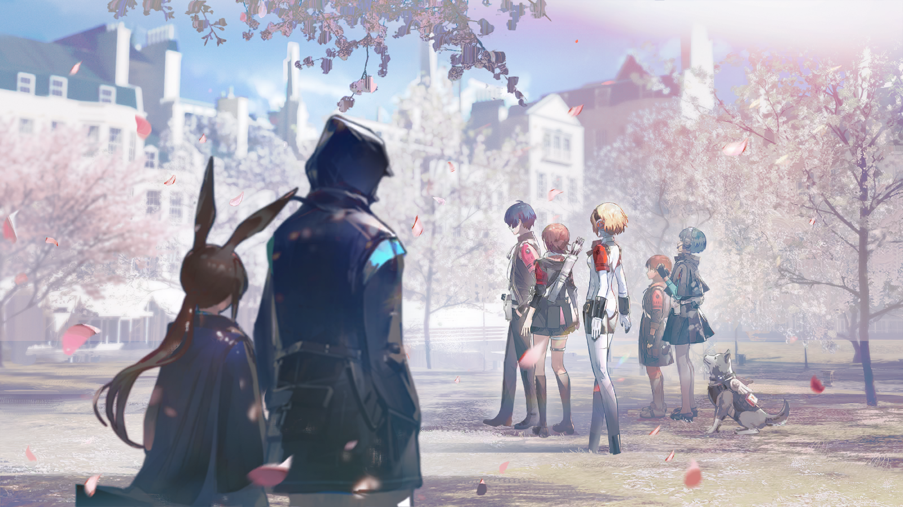
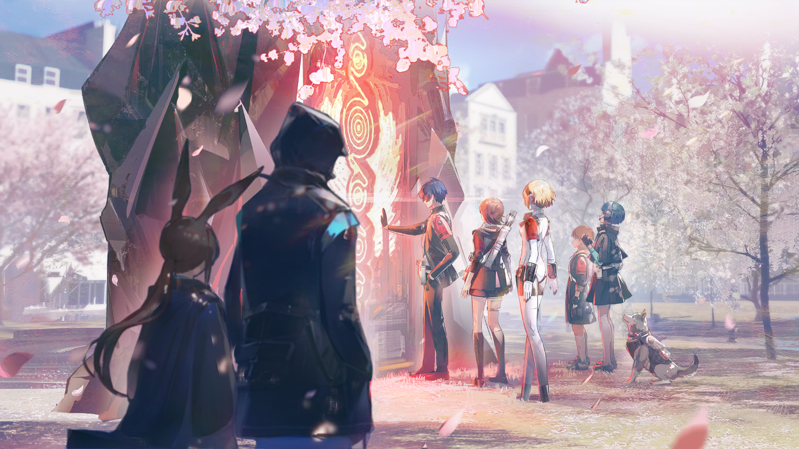

铳骑
……此前安魂殡仪堂发生的事件，过程即是如此。
铳骑
另外，调查中发现，事件目击者均出现不同程度的遗忘情况。部分证人在完成当日笔录的次日或再次日，对于事件的记忆已经开始模糊。
铳骑
目前，事件核心当事人在这方面暂且表现轻微，后续发展仍待观察，第五厅将会跟进。
铳骑
关于外籍访问者所报告的“怪物”，拉特兰公民方面仍然仅有殡仪堂事件当天的目击记录。
铳骑
外籍访问者方面，据报告在殡仪堂事件后尚未出现新的目击记录。
铳骑
根据第六厅要求，附上近期公民自杀率统计数据，环比略有下降，但仍然远高于灾异前水平。
铳骑
目前不能确认是否为通常数据波动，第六厅将会持续观察。

老人
那个使用守护铳自杀未遂的萨科塔呢，他的检查结果如何？
铳骑
这里是纸质副本。相关指标正常，未出现堕天迹象。
老人
……自杀未遂堕天，确实只是一种实例极少的原则性结论，最近的一则记录也是八十三年前了。
老人
“以铳自杀者堕天”是一则广为接受的信条，自杀者也确实拥有标准意义上“抹消萨科塔的敌意”，可能比一些杀人者还要更坚实。
老人
但在实践层面，要经由未遂的自杀而实现堕天几乎是不可能的。

老人
只有在极其偶然的严苛条件下，才可能出现“自杀未遂堕天”的情况……
铳骑
我还在报告呢？你不要突然开始自言自语地长篇大论。
老人
帕特里奇昂，我这不是在和你讨论工作嘛。
铳骑
好吧……没堕天也不算坏事吧。要是这个时候在拉特兰城里发生堕天事件，会很麻烦的。
老人
唉……不堕天就没有麻烦了吗？
老人
按照律法推论，我们今天谈论的这个年轻人，可是符合了“自杀未遂堕天”的所有条件啊。
铳骑
……
铳骑
……该不会，这也与灾异的后果有关？

老人
……还是不要现在就下结论为好。关于“自杀堕天”这部分的记录，先提高密级封存吧。
铳骑
好。那么最后是外籍访问者的处置，第七厅的建议是留置拉特兰，以便持续监控动向。
老人
这一点……我的顾问另有报告。书面上先维持这个处置吧，之后我和第七厅通个气。
铳骑
您那位顾问还参与了这次事件的调查？怎么会注意到这一块的？

老人
呵呵，那个人的关注方向总是很难揣摩的……
老人
不过，这次基本上是个巧合，仅此而已。
老人
你的那几位学生，要“回去”了吗？

班主任
嗯。花了一些时间才等到“杂音”的干扰降低到容许的范围内，一天前他们终于确认到了门扉的位置。
班主任
不知道是否和那个大型怪物被打散有关，门扉的位置似乎也变得比较稳定了，一天之内都没有发生变化。
班主任
我会送他们离开的。

老人
虽然这样说可能有些冷酷……但我很高兴得到你的保证，Dr.{@nickname}。感谢你对拉特兰的帮助。
班主任
我应尽的一点义务。
班主任
而且，即使你没有提出要求，我也会送那些孩子回去的。
班主任
年轻人总要走上自己的道路。无论以什么字眼为名义，也不该束缚孩子们的未来，那么做很少能有好结果。
老人
呵呵，你也要敲打我这个老人家吗？
班主任
我说的当然不是你，杰奥。

老人
……
班主任
开个玩笑，别在意。我该回学校去了。

裘里奥
好了好了，作为临别赠礼，最后让我好好请一次客吧！

埃癸斯
点什么都可以吗？

裘里奥
什么都可以！

埃癸斯
好。我记得可以使用终端点单，那么，按首字母排列……

天田乾
埃癸斯，上次我们陪结城哥他们实习，你点了那么多甜品，这次也要吗……？
埃癸斯
拉特兰的甜点实在让人好奇，难得来到这里，我想要留下尽可能多的记录。

岳羽由加莉
虽然能理解埃癸斯的心情……但是，裘里奥先生的钱包……
裘里奥
没问题没问题，尽管点就是了，吃不完的话，我也可以帮忙解决！

吉阿达
裘里奥，你在这里充大方，是忘记自己已经破产了吗？

裘里奥
既然回拉特兰了，就没有破产这个说法了嘛……
裘里奥
这么说，我是不是应该也请一下那位把我带回拉特兰的执行者，他能算是我的救命恩人了吧？

吉阿达
拜托，这一桌都是你的救命恩人吧？

虎狼丸
汪！

吉阿达
嗯，包括虎狼丸。

山岸风花
呵呵……看来你们两位已经没问题了，太好了。

吉阿达
都因为你，裘里奥，连我也被小孩子担心了。
裘里奥
好嘛好嘛，我就是比较没用嘛……
吉阿达
禁止自暴自弃。
裘里奥
吉阿达，你不觉得你现在扮演我的监护人会有那么一点点奇怪吗，比如其实我比你年长哦……？
吉阿达
我没有扮演你的监护人，少自作多情了。
吉阿达
而且年长又怎么样，我们两个在这些孩子面前丢人丢得还不够吗，别说些只会让自己脸红的话了。
裘里奥
理，你有没有觉得吉阿达对我越来越冷酷了……

结城理
没有觉得。感觉很温柔。

吉阿达
……你这小孩子，在说什么啊。

吉阿达
不过，结城……你们真的打算，现在就离开拉特兰吗？不考虑再多待一阵子吗……？

结城理
回到家乡还有重要的事要做……

吉阿达
唉……总觉得以你们的年纪来说，你们这些孩子责任心重得有点过头了。是什么事非得要你们去完成不可呢……

裘里奥
我倒是能理解啦。无论走到哪里，家乡都是无可替代的嘛……

岳羽由加莉
……不用气氛这么沉重啦！能在拉特兰认识大家，已经是很珍贵的经历了……最后还是笑着告别吧。
岳羽由加莉
话说回来，吉阿达和裘里奥呢，之后有什么打算吗？
吉阿达
……上班。

天田乾
……大人真的好可怜啊……
吉阿达
对了，之前向公证所申请调阅的报告下发了……不过，你们想了解的信息，应该已经知道了。

岳羽由加莉
嗯……

山岸风花
我们离开之后，怪物……还会出现吗？
裘里奥
肯定不会了吧！
裘里奥
不过真正的问题反正也不是怪物啊，按照你们老师的看法。

吉阿达
……

山岸风花
……

裘里奥
……嗯？怎么都不说话了，是我说了让人尴尬的事吗？
裘里奥
唔……等我对照电子手册查一下……你们表情的意思……
吉阿达
你还真买了那个什么情绪识别函授课程？！
裘里奥
嗯。好。现在我感觉到尴尬了。
裘里奥
……不会的事就要学嘛！好歹是公证所里贴的广告……
裘里奥
难不成吉阿达会教我吗？难道不会十分钟之内就被我气走吗？
吉阿达
你说得对，我不会教你的。自学加油。
岳羽由加莉
我觉得……怪物应该不会再出现了。

岳羽由加莉
虽然，按照博士的说法，那种“愿望”并不会就这样消失……
岳羽由加莉
但也许……那并不是多么值得恐惧的事。
结城理
拉特兰会好起来的。
吉阿达
……嗯。
裘里奥
当然啦，如果连我这样无可救药的人也能够去努力……
裘里奥
拉特兰也一定会拯救自己的。

裘里奥
他们去学校了？
吉阿达
嗯，好像说回宿舍收拾一下行李，之后就去学校和老师同学告别了。
吉阿达
你真的要正式申请殡仪堂的工作吗？我还是不确定那里是否适合你……
裘里奥
我不会把每场葬礼都变成派对的啦。
吉阿达
……

吉阿达
……我是担心，那个地方会让你……压力太大。
裘里奥
你怎么这么坦率了……？

吉阿达
告诉你……也没什么。
裘里奥
……
裘里奥
葬礼那天，我很早就去了天台。我想你一定会来的。
裘里奥
因为我仍然相信，你和我都爱着维韦塔。虽然……爱的形态有很多种，有时候，它的样子也不是很好看。

裘里奥
它可能是追求快乐，也可能是允许悲伤……但还不止这些。
裘里奥
爱是……永不止息的努力，愿意做，并且去做。决不放弃，决不停下步伐，决不屈从于灾难和疲惫……决不向失望俯首。
裘里奥
所以我会努力不让你担心的。
裘里奥
也许还会有失望的那一天，但它不会再摧毁我了。

班长
今天，天气非常好哦……
班主任
嗯，苹果花都开了。

班长
结城同学他们，今天就要回去了吗？

班长
我还以为会有很多机会可以一起玩……我还想过，暑假去修道院锻炼的时候，要不要叫上他们一起。
班长
没想到春天还没结束，就要分开了……
班主任
那就把你的想法告诉他们吧，如果觉得不舍。
班主任
哦，他们来了。
虎狼丸
汪！

班长
虎狼丸！还是你最先到呀。

山岸风花
小虎今天很有精神呢。

岳羽由加莉
自从不用夜间调查之后，虎狼丸对出门散步的热情日益高涨了……
虎狼丸
汪汪！

埃癸斯
看来虎狼丸很喜欢在拉特兰的各处散步呢。

天田乾
感觉虎狼丸见到新鲜的事物就会很开心。而且每次带虎狼丸出门散步，遇到的人也都很喜欢他。
班长
其实我也一直想试试带虎狼丸去散步呢，我有一条很喜欢的散步路线。
班长
不过现在好像来不及了……
班长
要是早点想起来，去拜托结城同学和虎狼丸就好了。

结城理
……要现在去吗？我们可以等你。
班长
有点远呢，还是不用啦。虎狼丸也想尽快回家吧……
班长
不过……大家真的没有考虑过在这里多待一阵子吗？
班长
我还有想要带你们去看的地方，想介绍给你们的店铺，还有之前约过的靶场练习……
苹果花被风吹落，卡特斯少女低声说着之前做好的计划，和新结识的友人出行的打算。
自异乡而来的孩子们却不知如何回答她。
岳羽由加莉
阿米娅……你说的那些地方，一定都很有趣，如果有机会，我很想和你一起去。

岳羽由加莉
但如果不回去的话……我会觉得，像是逃避了自己的责任。
班主任
你们要去做很困难的事吧。

岳羽由加莉
……是的。
埃癸斯
我喜欢这段时间的生活，陪伴在理的身边，度过平凡的日常……如果这样的时间能延续下去，我会……很开心。

埃癸斯
……但是，使命还没有完成。

山岸风花
嗯……回去之后，确实会面临很多……危险和困难。
班主任
我知道你们不会改变主意的。
班主任
只是，和你们结识确实是很难得的缘分。阿米娅难免舍不得你们。最近这段时间，她很开心。
班长
……老师……
班主任
好吧，我也一样。
班主任
不过，我知道告别的时刻总是会来的。

结城理
Dr.{@nickname}……
班主任
我会祝福你们。
班主任
一名老师总是愿意见到孩子成为自己真正决心成为的人。
班主任
去做你所相信的事吧。也别忘了，你在很多人心中，都是十分重要的人。
班长
祝你们……一切顺利。

结城理
……谢谢，博士，阿米娅。

结城理
那么……再见了。

召唤出人格面具，风花再次确认了此时此刻门扉的位置。
门扉在时空罅隙中移动不定，此前他们未曾发现、也未曾预想，最终他们将在这里找到门扉——
就在这校园之中。
春日的阳光倾洒，休息日的校园空阔宁静，没有丝毫异常事物的影踪。
结城理和同伴走到门扉应在的位置，视野里唯有柔软的花瓣飘落。
他在春风中回过头，望向身后目送着他们离去的两人。
就在那一瞬间，似乎有一线蓝色鳞粉洒落。
像一道微小的流星，划下一瞬即逝的闪光。
他收回目光，向前方伸出了手。

自空气的涟漪中，于少年的指尖前，门扉显现。
结城理将手按上了冰凉的、非石非金的门扇，他感到手掌下的门扉开始微微发烫。
教师和卡特斯少女看着那扇巨大的门在结城理的触碰下渐渐亮起红光。
一声轻响，门扉缓缓打开。
自异乡而来的少年们向两人挥手告别，走进门扉之中。
结城理走在最后。他隐隐察觉，迈过这扇门后，通向身后世界的出口便将不复存在。
他站定片刻，走进了门中。
在门扉关阖的响声中，他听见了最后一声道别。
经过不知位于何处、不知处于何时的通道，他们再度感受到了熟悉的气息。
人工岛的风带着淡淡的海的味道，少年一行人走出了塔尔塔罗斯。
像是从梦中醒来一样，某段缥缈的记忆正在变得越来越遥远。
白色的城市，苹果花下的校园，那样的画面慢慢地淡去了。
结城理眨了眨眼睛，脑海中渐渐只剩下一道模糊的余响，像是什么人的声音，可那语言也在变得越来越陌生。
只有话语中的情感，似乎还依稀可辨，那应当是在说……
“一路珍重。”